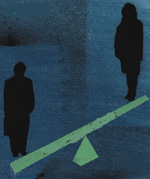

پذيرش > تریبون > گزارش كمپين > سرانجام لايحه حمايت از خانواده چه مي شود؟
 بازخواني طرح لايحه اي جنجال آفرين بازخواني طرح لايحه اي جنجال آفرين

 سرانجام لايحه حمايت از خانواده چه مي شود؟ سرانجام لايحه حمايت از خانواده چه مي شود؟
25 شهریور 1386 - محبوبه حسين زاده - نسخه قابل چاپ
لايحه حمايت از خانواده در روز چهارم شهريورماه در كميسيون فرهنگي مجلس شوراي اسلامي و با حضور برخي كارشناسان، نماينده دستگاه قضايي و كارشناسي از مركز پژوهشهاي مجلس مورد بررسي قرار گرفت. هرچند ادامه بررسي و راي گيري درباره كليات اين لايحه، به جلسات بعدي موكول شد اما اعلام همين خبر و دسترسي به محتواي اين لايحه، كافي بود تا موجي از اعتراضات، اظهارنظرها و بيانيه ها را درمورد طرح اين لايحه در مجلس بر انگيزد. از نشست اعضاي كمپين يك ميليون امضا گرفته تا اعتراض دبيرجامعه زينب و زنان اصولگراي مجلس؛ از بيانيه 2000نفر از مدافعان حقوق برابر تا بيانيه جبهه مشاركت. حتي آيت الله صانعي نيز با فتاوايي، اعتراض خود به مفاد اين لايحه را اعلام كرد و البته سخنگوي قوه قضائيه هم به انتقاد از دولت پرداخت كه تغييراتي در اين لايحه ايجاد كرده است.
اعتراض به تعدد زوجات
نخستین واکنش و بیشترین آن به ماده ای بود که ازدواج مجدد را ترویج می کرد. اعتراض آيتالله صانعي نسبت به این ماده تحت عنوان فتوای ایشان تیتر خبرهای اصلی شد:«ازدواج مجدد مرد بدون اجازه همسر اول، خلاف شرع است». آيتالله العظمي يوسف صانعي گفت: ازدواج مجدد مرد بدون اجازه همسر اول، خلاف شرع، حرام و معصيت است. وي در پاسخ به سوالي دربارهي ماده 23 لايحه جديد حمايت از خانواده مبني بر اينكه چنانچه مردي قصد ازدواج مجدد داشته باشد بايد از دادگاه اجازه بگيرد، افزود: در صورتي که رضايت زن اول وجود نداشته نباشد، حتي اگر مرد تمکن مالي هم داشته باشد، ازدواج مجدد وي حرام است.
قوه قضائیه از زبان سخنگوی خود ماده 23 اصلاحي لايحه حمايت از خانواده از سوي دولت را در خصوص "اذن همسر اول براي ازدواج مجدد همسر" را مورد نقد حقوقدانان دانست و اظهار اميدواري کرد مجلس شوراي اسلامي در تصويب لايحه، موضوعات مذكور و تغييرات كميسيون دولت را مدنظر قرار دهد.
سهيلا جلودارزاده، عضو فراكسيون زنان مجلس نیز گفت: هنگامي كه كميتهاي از طرف قوهي قضاييه اين لايحه را بررسي ميكرد، مادهي 23 نبود و اين ماده از طرف دولت اضافه شد. در مطالعه و بررسي صورت گرفته به مادهي 23 برخورديم كه واقعا غيركارشناسانه تنظيم شده و به هيچ عنوان حقوق، شخصيت و كرامت انساني زن در آن در نظر گرفته نشده است. جلودارزاده گفت: اين مورد در حال حاضر به كميسيونها ارجاع شده و قرار بود كه اين اصل هشتاد و پنجي شود و مجلس تمام اختيار خود را به كميسيون قضايي تفويض كند؛ اما نمايندگان بعد از ديدن لايحه امضاهايشان را پس گرفتند و اين امر بايد با در نظر گرفتن تمام جوانب آن در صحن علني مجلس بررسي شود. وي افزود: تصويب مادهي 23 لايحهي حمايت از خانواده اصلا به مصلحت نيست و اين ماده اقدام براي متلاشي كردن خانوادههاست.
اعتراض به لایحه حمایت خانواده جدا از اعتراضات فردی، با اعتراض های جمعی هم همراه بود. در نشست کميسيون زنان جبهه مشارکت با عنوان "لايحه حمايت از خانواده: تزلزل يا تحکيم" به ابعاد این تزلزل پرداخته شد و بیشترین اعتراض ها به ماده 23 بود. كديور، پژوهشگر علوم ديني، لايحهي حمايت از خانواده را نوعي توسعه براي حقوق مردان ذكر كرد. اشرف گرامي زادگان، حقوقدان، نیز گفت:« ازدواج مجدد به شان مرد ايراني توهين كرده است در حالي كه هيچ مردي به اين مساله اعتراض نميكند.» الهه كولايي، عضو جبهه مشاركت ايران اسلامي، به مصوبات جديد در مورد ازدواج مردان انتقاد كرد و با ابراز اميدواري از اين كه چنين طرحي تصويب نشود، تصويب آن را " رها شدن تير خلاص به سمت خانواده" توصيف كرد و گفت:« آنچه در مورد نظام حقوقي خانواده در كشور ما قابل اعتناست، تاثيرپذيري مشهود روشها از نگرش سياسي اجتماعي و فرهنگي و دارا بودن حق انساني برابر زنان و مردان است كه معتقديم اين ظرفيتها بايد فراهم شود.» فريده ماشيني، رييس كميسيون زنان جبههي مشاركت، نیز گفت :« وقتي مسالهي ازدواج دوم فارغ از تمام بحثهاي حقوقي مطرح ميشود، سوال اين است كه چرا بايد اين موضوع طرح شود؟ آيا اين مشكل زنان است يا مردان؟ فخرالسادات محتشمي پور، رييس شاخه زنان جبهه مشاركت ايران اسلامي و سخنگوي مجمع زنان احزاب اصلاحطلب نيز گفت: منطق اين لايحه چيست و آيا مشكل مردان ما امروز همين است؟ يا اينكه مثلا يك روز بحث ازدواج موقت را مطرح ميكنند و يا طرح تعدد زوجين در مجلس مطرح ميشود؟ ظاهرا هم قرار نيست در اين زمينه حتي مناظرهاي صورت بگيرد!»
فراروی دولت از نبایدها
سخنگوي قوه قضائيه علاوه بر این به عملکرد دولت نسبت به تغییر لوایح قضای واکنش نشان داد. وی با اشاره به تغيير موادي از "لايحه حمايت از خانواده" از سوي دولت گفت: بر اساس تفسير شوراي نگهبان دولت نبايد لوايح قضايي را تغيير دهد. عليرضا جمشيدي با اشاره به تغييرات كميسيون دولت در ماده 25 اين لايحه كه وزارت اقتصاد و دارايي را موظف مي كند از مهريههاي بالاتر از حد متعارف و غيرمنطقي با توجه به وضعيت زوجين و اقتصاد كشور به طور تصاعدي در هنگام ثبت ازدواج ماليات بگيرد گفت: اين مساله مورد انتقاد حقوقدانان است كه تشخيص ميزان اخذ ماليات بر مهريه با توجه به وضعيت كشور چگونه خواهد بود.
مغایرت با عدالت خواهی
در میان گروه های زنان اصولگرا مخالفت با لایحه بسیار بود. دبير جامعه زينب اعلام کرد لايحه برپايه عدالت نيست. مريم بهروزي گفت: ما با مواد اين لايحه مخالف هستيم و نظرات خود را بيان مىکنيم. اساس اين لايحه برپايه عدالت نيست در صورتى که قواعد، قوانين و اعمال در نظام جمهورى اسلامى بايد براساس عدالت باشد. شعار دولت نهم نيز عدالت محورى است. وى با تاکيد بر اينکه اين لايحه براساس عدالت و اسلاميت نيست، افزود: جامعه اسلامى زنان بنا دارد با برگزارى يك نشست در اين مورد مخالفت خويش را اعلام كند. اين نشست با هدف دفاع از حقوق خانواده و حقوق اسلامي آن و با تاكيد بر اين موضوع كه اين لايحه بايد يك مبنا داشته باشد برگزار ميشود.
مغایرت با عرف جامعه
منيره نوبخت، رييس شوراي فرهنگي اجتماعي زنان با تاكيد بر لزوم توجه به اصل لايحه حمايت از خانواده و ارزش و اهميت آن، ماده 23 را مادهاي بسيار مهم دانست كه لازم است نمايندگان مجلس آن را اصلاح كنند. وي تاكيد كرد: نمايندگان مجلس ضمن اصلاح و عبور از ماده 23، بايد اصل لايحه را كه بسيار ارزشمند است، مورد توجه قرار دهند و از بررسي آن باز نمانند. به گفته وي عرف و فرهنگ جامعه ايران با چند همسري مخالف و موافق تك همسري است.
نبود درک درست از مسائل زنان
رييس سابق مركز امور مشاركت زنان، بالا رفتن سطح مهريه به عنوان سدي براي ازدواج بعدي مرد از سوي زنان، به خطر افتادن بنيان خانواده، افزايش زنان معلقه و بلاتكليف ، افزايش فساد اخلاقي، به خطر افتادن امنيت رواني جامعه و زنان، ناديده گرفتن سلامت اخلاقي و غيره را از تبعات شوم ماده 23 لايحه قضايي خانواده دانست و از مجلس خواستار توجه به اين ناهنجاريها شد.
زهرا شجاعي اين ماده را بازي با سرنوشت زنان به عنوان نيمي از جمعيت جامعه توصيف كرد و گفت: نبود درك درست از مسائل زنان كه همواره آن را در چارچوب ازدواج و نيز خانواده محصور كرده و بر ساير مطالبات زنان خط كشيده است، هر از گاهي باعث طرح چنين پيشنهاداتي شده است. چنانچه تا پيش از اين پيشنهاد هم، با بحث ازدواج موقت مواجه بوديم.
بازگشت به قهقرا
عفت شريعتي، عضو فراکسيون زنان مجلس، با انتقاد از لايحه حمايت از خانواده گفت: براي اين لايحه شأنيت قائل نيستم و تا اين لايحه اصلاح نشود در مورد آن حرفي نمي زنم. وي با بيان اين مطلب که نميتوانيم به گذشته و قهقرا بازگرديم، افزود: بايد به دنبال استحکام و پايداري خانواده باشيم نه اين که آن را خدشهدار كنيم.
لایحه ای برای تکرار تبعیض
اعضاي كمپين يك ميليون امضا نیز در نشستی كه به همت فعالان کمپین یک میلیون با حضور اعضای کمپین و فعالان امور زنان برگزار شد، از منظر حقوقي، جامعه شناسي و روان شناسي مورد بحث و بررسي قرار گفت. فريده غيرت و نسرين ستوده به بررسي حقوقي اين لايحه و دكتر شهلا اعزازي به بررسي جامعه شناسي آن پرداختند و دكتر شيوا دولت آبادي هم به تاثيرات منفي اين لايحه از بعد روانشناسي پرداخت. فریده غیرت گفت:« اطلاق حمایت از خانواده بر این لایحه بسیار بسیار بی معنا است».
آنان نیز با انتشار بیانیه بیش از دوهزار نفر از مدافعان حقوق برابر خواستار آن شدند که مجلسیان اين لايحه را از دستور كار خارج كنند.در این بیانیه آمده است:« لایحه نویسان قانون خانواده به واقع این لایحه را برای مردان نوشته اند نه زنان، چرا که چنانچه مجلس شوراي اسلامي لايحه پيشنهادي دولت را تصويب كند مردان فرصت طلب براحتی می توانند تنها با پرداخت مهريه همسر خود، و سپردن تعهدي ضمني بر اجراي عدالت بين همسران، زن ديگري اختيار كنند در حالي كه هنوز ازدواجي رخ نداده است و معلوم نيست قاضي از چه طریق قرار است پي به عادل بودن مرد ببرد» در اين تومار، موارد اعتراض ذكر شده و در پايان هم تاكيد شده است:«ما امضا كنندگان اين بيانيه ضمن اعلام اعتراض شديد خود به وجود قوانين تبعيض آميز به ویژه قانون تعدد زوجات، خواستار لغو بدون هیچ قيد و شرط این ماده قانونی هستيم و اعلام مي كنيم چنانچه مجلس شوراي اسلامي لايحه جدید پيشنهادي را از دستور كار خود خارج نكند، دست به اقدامات جدي تري خواهيم زد. اگر روزی این لایحه در صحن مجلس مطرح شود، بی شک نمایندگان مجلس بدون حضور و صدای عدالت طلبانه ما در مقابل مجلس، آن روز را نخواهند گذراند.»
موافقان و توجیهات
در پي ارائه لايحه حمايت از خانواده به مجلس شوراي اسلامي و اعتراض برخي فعالان حقوقي و نمايندگان به ماده 23 آن، دو تن از زنان دست اندركار تهيه اين لايحه در يك ميزگرد در ايسنا، به حمايت از آن پرداختند. نفيسه فياضبخش، عضو فراكسيون زنان مجلس شوراي اسلامي و فاطمه بداغي،نماينده قوه قضاييه در شوراي فرهنگي اجتماعي زنان خواهان همكاري همه نمايندگان مجلس براي تصويب و همچنين همفكري آنان براي اصلاح لايحه شدهاند زيرا معتقدند تصويب اين لايحه به منزله برداشتن قدم بزرگي براي احقاق حقوق زنان و خانواده است.
فياض بخش با تأكيد بر اينكه وضع موجود اسفبار بوده و واقعا به ضرر زنان است و اين لايحه وضع موجود را سامان ميدهد، دربارهي ماده 23 كه ناظر بر ازدواج مجدد مرد با اجازه دادگاه است، گفت: در خصوص ماده 23 نقص و خلأ قانون وجود دارد، زيرا در حال حاضر مرد بيبضاعت به راحتي ميتواند ازدواج مجدد كند، اما در اين قانون گفته شده كه حق نداريد ازدواج مجدد كنيد و بايد اجازه دادگاه را داشته باشيد و در تبصرهي آن هم به پرداخت مهريه همسر اول نيز تأكيد شده است وهمچنين در مادهي 47 ضمانت اجرا براي اجرا نكردن آن در نظر گرفته شده است.
همچنين بداغي نمايندهي قوهي قضاييه در شوراي فرهنگي ـ اجتماعي زنان، بلند شدن صداي توسعهي ازدواج موقت و مجدد در بعضي تريبونها را به استناد تصويب لايحه حمايت از خانواده نشاندهندهي اين موضوع دانست كه برخي بر احساسات مردم سوار شدهاند و تصريح كرد: اين لايحه بحث ازدواج مجدد را براي اولين بار بعد از انقلاب محدود كرده و برايش ضمانت اجرا گذاشت.
يك عضو كميسيون فرهنگي مجلس نيز با حمايت از اين لايحه گفت: به دليل دغدغه و نگرانيهايي كه پيش ميآيد، مواردي چون اجازه همسر اول و اطمينان از اينكه احراز آن تحميلي و بر اثر تهديد نبوده است، در ذيل ماده 23 لايحه حمايت از خانواده اضافه شود.
فاطمه آليا، ماده 23 را گام مثبتي دانست: به دليل اينكه در قانون حمايت از خانواده سال 1353، ماده شانزدهي وجود داشت كه اجازه همسر اول در آن ذكر شده بود ولي از سال 1373 به اقتضاي آن زمان، اين مسأله از قانون حذف شد و قانون تا اين زمان در مورد ازدواج مجدد سكوت داشته است و بنابراين مردها ميتوانستند همين ازدواجهاي مجدد مخفيانه را بدون اجازه دادگاه انجام دهند، ولي الان همين ماده 23 به همين صورتي كه هست يك قدم مثبتي است كه برداشته شده و حداقل مرد را موظف به مراجعه به دادگاه كرده است.
اکنون باید دید مجلس لایحه را وارد دستور کار خود می کند یا خیر؟ در صورتی که پاسخ مثبت باشد به نظر می آید که واکنش های جدی نسبت و به این لایحه پدید خواهد آمد و احتمالا تجمع بزرگی در برابر مجلس را شاهد خواهیم بود. تا آن زمان باید دید نمایندگان مجلس چه تصمیمی خواهند گرفت؟ و چه کارنامه ای را برای خود رقم خواهند زد.
ارسال به
بالاترین
،
توییتر
،
فریندفید
،
فیسبوک
در همين بخش :
 دهمین دورۀ مراسم تندیس صدیقه دولت آبادی ۱۳۹۲ دهمین دورۀ مراسم تندیس صدیقه دولت آبادی ۱۳۹۲
کارت پستالهایی به بهانهی هشت مارس و به یاد همهی مبارزین راه برابری
بیانیه بیش از 350 تن از مدافعان حقوق زنان به مناسبت روز جهانی زن؛ زنان هر روز فرودستتر میشوند
لباسی که برای تن ما دوخته اند! /اعظم بهرامی
چالشها و چشمانداز فعالیت مدنی زنان
ديگر بخش ها :
طرح یک میلیون امضا
|
مقالات
|
سایت نوشته ها
|
اخبار
|
گزارش كمپين
|
گفت و گو
|
علیه سکوت
|
كوچه به كوچه
|
نامه های شما
|
گزارش ویژه
|
گفتگو با اعضا
|
ویژه سالگرد کمپین
|
تصویر برابری
|
دل آرام علی
|
تریبون
|
مقالات
|
تاریخ شفاهی
|
خارج از چارچوب
|
کتابخانه
|
درباره کمپین
|
کمپین در شهرها
|
کمپین در بند
|
صدای تغییر
|
ویژه 22 خرداد
|
لایحه حمایت از خانواده
|
گالری
|
عشا مومنی
|
امیر یعقوبعلی
|
خدیجه مقدم
|
راحله عسگری زاده و نسیم خسروی
|
پروین اردلان،جلوه جواهری، مریم حسین خواه، ناهید کشاورز
|
زینب پیغمبرزاده
|
سعیده امین، سارا ایمانیان، محبوبه حسین زاده، ناهید کشاورز و همایون نامی
|
احترام شادفر
|
نسیم سرابندی زاده،فاطمه دهدشتی
|
وبلاگ مهمان
|
پرونده خرم آباد
|
دستگیری ها
|
مریم مالک
|
پرستو اللهیاری
|
مهرنوش اعتمادی
|
سمیه رشیدی
|
Other Languages
|
همراهان
|
«فراخوان کمپین ده روز با بهاره هدایت»
| English
|